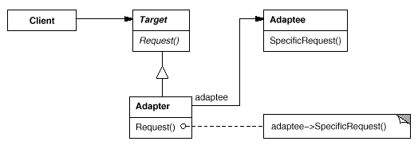
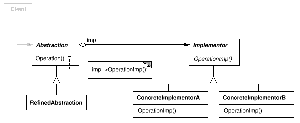
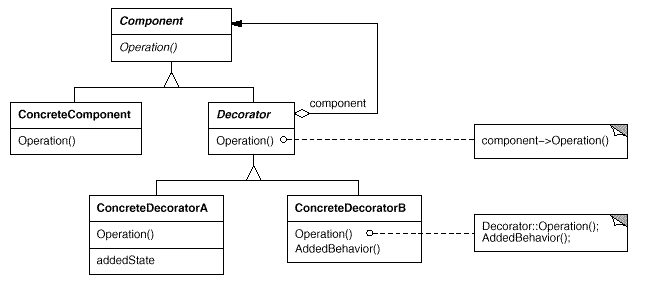
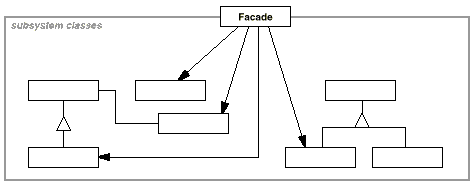
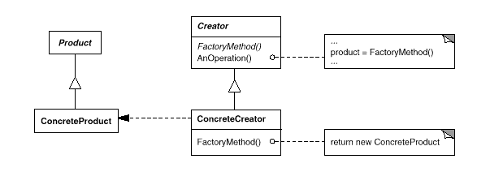
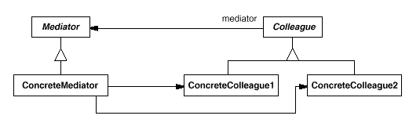
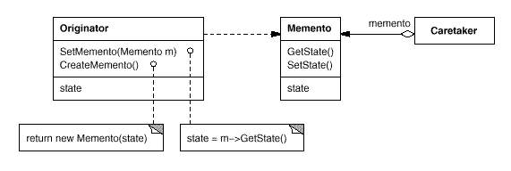
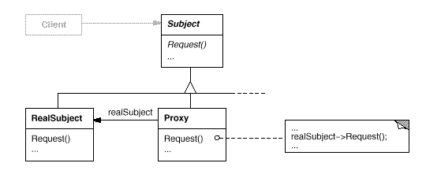
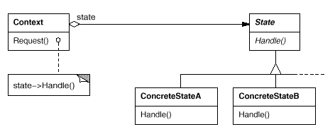
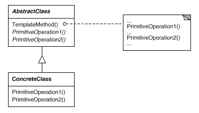

意图:为特定的客户(或情况)提供特定系列的对象。

意图:将一个类的接口转换成客户希望的另外一个接口。

意图:将一个类的接口转换成客户希望的另外一个接口。

意图:将抽象部分与它的实现部分分离，使它们都可以独立地变化。

意图:将一个复杂对象的构建与它的表示分离，使得同样的构建过程可以创建不同的表示。

意图:使多个对象都有机会处理请求，从而避免请求的发送者和接收者之间的耦合关系。

意图:将一个请求封装为一个对象，从而使你可用不同的请求对客户进行参数化；对请求排队或记录请求日志，以及支持可撤消的操作。

意图:将对象组合成树形结构以表示“部分-整体”的层次结构。
同[安全式]图
意图:将对象组合成树形结构以表示“部分-整体”的层次结构。

意图:动态地给一个对象添加一些额外的职责。

意图:为子系统中的一组接口提供一个一致的界面，此模式定义了一个高层接口，这个接口使得这一子系统更加容易使用。

意图:定义一个用于创建对象的接口，让子类决定实例化哪一个类。

意图:运用共享技术有效地支持大量细粒度的对象。

意图:给定一个语言，定义它的文法的一种表示，并定义一个解释器，这个解释器使用该表示来解释语言中的句子。

意图:提供一种方法顺序访问一个聚合对象中各个元素, 而又不需暴露该对象的内部表示。

意图:用一个中介对象来封装一系列的对象交互。

意图:在不破坏封装性的前提下，捕获一个对象的内部状态，并在该对象之外保存这个状态。

意图:定义对象间的一种一对多的依赖关系,当一个对象的状态发生改变时, 所有依赖于它的对象都得到通知并被自动更新。

意图:用原型实例指定创建对象的种类，并且通过拷贝这些原型创建新的对象。

意图:为其他对象提供一种代理以控制对这个对象的访问。

意图:保证一个类仅有一个实例，并提供一个访问它的全局访问点。

意图:允许一个对象在其内部状态改变时改变它的行为。

意图:定义一系列的算法,把它们一个个封装起来, 并且使它们可相互替换。

意图:定义一个操作中的算法的骨架，而将一些步骤延迟到子类中。
意图:表示一个作用于某对象结构中的各元素的操作。